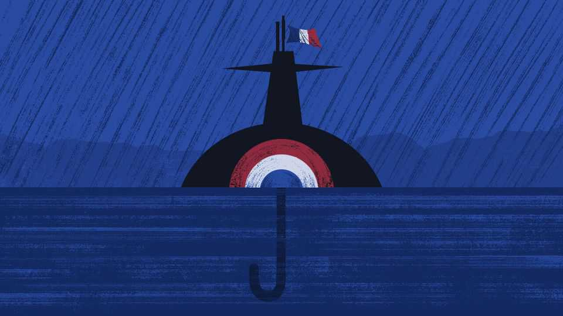

Can French nukes protect Europe if Donald Trump walks away?
Europeans are keen on nuclear collaboration with Emmanuel Macron. What if Marine Le Pen becomes president?

Jul 30th 2026
CAN FRENCH swagger keep Europe safe? A growing number of European governments seem anxious to find out. This is a lonely world, stalked by great-power bullies. France has something that continental neighbours lack: a small but potent nuclear arsenal. Its air- and submarine-launched missiles are distinct in one more way.
Thanks to decisions taken decades ago by President Charles de Gaulle, the embodiment of Gallic haughtiness from his cavalry boots to his aquiline nose, France’s nukes are wholly independent. Though France is a member of NATO, its home-grown arsenal is firmly under national control. Europe’s other nuclear power, Britain, relies on American technology for its submarine-launched nuclear missiles. Launch authority rests with Britain’s prime minister, but the missiles are assigned to NATO. Alliance planners can count on British missiles as a complement to America’s vast arsenal, like an extra rib to America’s nuclear umbrella.
De Gaulle sniffed privately that Britain had sold its birthright and become a vassal to the Yanks. As for America’s offer to protect Europe from Soviet attack, he asked John F. Kennedy: why should the world believe that America would sacrifice New York for Paris? De Gaulle was no starry-eyed European. While paying lip-service to European unity, he wanted France firmly in charge, like a cockerel crowing on a dunghill, as one of his ministers put it.
European interest in France’s nuclear forces marks a change. Since as far back as François Mitterrand in the 1980s, French presidents have invited neighbours to collaborate on nuclear deterrence, only to be spurned by allies fearing a scheme to undermine America. Yet nine or so countries, led by Germany, are now talking to France about joining its nuclear exercises and hosting temporary forward deployments of its nuclear weapons. This follows a speech by President Emmanuel Macron in March in the Gaullist setting of a French submarine base, offering to make all Europe safer with France’s nukes. French officials spent months ahead of Mr Macron’s speech sounding out allies. France was stung when he made a similar offer in 2020, briefed in advance to the German chancellor, Angela Merkel. But Berlin was silent.
Mr Macron’s speech this year trod a path between two perils. To reassure NATO-sceptics on his country’s radical left and populist right, he emphasised that French nukes would remain under sovereign control. At the request of allies he included praise for NATO and for America’s role keeping Europe safe. His reward was a joint statement issued with Germany’s chancellor, Friedrich Merz. That pledged close collaboration with France, while making clear that this “will add to, not substitute for, NATO’s nuclear deterrence”. In 2025 Mr Macron secured a joint statement with Britain declaring that “France and the United Kingdom agree that there is no extreme threat to Europe that would not prompt a response by our two nations”. Alas, the then-prime minister, Sir Keir Starmer, did not sell the policy to his public.
If Europe is now keener on nuclear co-operation, two presidents, America’s Donald Trump and Russia’s Vladimir Putin, can take credit. A nightmare scenario haunts Europe: a crisis in which Russia uses nuclear weapons to blackmail a NATO member, and an unreliable America looks the other way. It says much about the bleakness of the age that Europeans are so interested in France’s nuclear umbrella. For nuclear wonks hotly debate whether France’s offer makes sense. France has enough weapons to defend its own territory. With 300-odd warheads, some launchable from stealthy submarines, it can credibly threaten massive retaliation against an enemy even after France has endured a surprise assault. French nuclear doctrine is designed to prevent war. If an adversary imperils France’s vital interests, war plans envisage a one-off nuclear warning shot being lobbed into enemy territory, to signal that the fight is about to turn nuclear. But should a nuclear war begin, powers the size of France (or Britain), know that there is a good chance they will not survive.
Put another way, France is not America, a distant superpower protected by two oceans and nuclear-tipped missiles that could destroy an enemy’s nuclear forces, allowing it to plausibly intervene in a European nuclear war without facing its own destruction. In the cold war, America’s answer to de Gaulle’s question was: we would hope to save Paris, without sacrificing New York. It is harder for France to answer a variant on the question: why should anyone believe that a French president would lose Paris to save Berlin, Helsinki or Tallinn? In response, French strategists note Europe’s small scale and deep political ties, making a Russian attack on any close partner a life-and-death threat to Paris.
That is not a bad answer, should Russia attack a close partner. But what about far-flung corners of the continent? Even if forward deployments of French nukes keep Russia guessing, France’s umbrella is too small to shield all of Europe. To date, France’s solution is to talk of “a European dimension” to its vital interests, and to refuse to say exactly whom it regards as close partners.
Talk of France’s European interests generates one last problem. What happens if the presidency is won in 2027 by Marine Le Pen of the National Rally, a Europe-bashing right-wing party? Mr Macron’s nuclear speech in March was written to be “National Rally-proof”, sources say, and Ms Le Pen welcomed its emphasis on sovereignty. Still, she is quite capable of insulting European allies, which would tend to undermine French protection of its neighbours. She has a history of pro-Russian sympathies, too, though she has muted those of late. French swagger comes in more than one variety, as Ms Le Pen shows. Europe will rely on it at its peril. ■